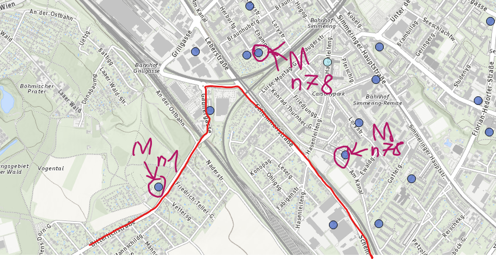

Vorabinfo: neues Ziegelhaus vor zwei Jahren gebaut. Kein Kabelanschluss möglich, daher Outdoor Box 5G. Hat halbwegs funktioniert, daher auf die Indoor Zte mc888 pro gewechselt. Sofort volle Bandbreite von 600/50 mit minimalen Schwankungen die man aber gewöhnt ist. Die Box stand im Erdgeschoss in einer Ecke beim Tv. Alles hat super funktioniert, 5G immer da. Am 12.11 ist mir aufgefallen das kein 5G mehr empfangbar ist, nur mehr Lte+. Egal wo im Haus die Box ist, keine Besserung. Auch die Handys sind betroffen. Lt. Magenta keine Störungen, wenn ich mit dem Handy ca. 100 Meter raus gehe, 5G vorhanden. Komplettes Prozedere mit Magenta durchgegangen, hat aber nix gebracht. Die Frage die Magenta nicht beantworten kann ist woran das liegen könnte. Es hat sich nix an der umliegendes Infrastruktur geändert, weder bei mir im und um das Haus noch in der Nachbarschaft. Selbst wenn die Box draußen ist in direkter Ausrichtung zum Sendemasten der nur ca. 250 Meter entfernt ist, direkte Sicht ohne Gebäude oä im Weg, kein 5G.
Die Box kann es ja nicht sein da ja die Handys auch kein 5G empfangen können. Alle Anrufe und Bemühungen meinerseits haben nix gebracht. Lage ist in Wien, Simmering, nähe Löwigrube. Gibt's ein Funkloch überhaupt noch und/ oder kann sowas plötzlich auftreten?
Hallo @Puma185 , 👋
danke für deine ausführliche Beschreibung – ich verstehe, wie frustrierend das für dich sein muss. Wenn sowohl deine 5G-Box als auch die Handys plötzlich kein 5G mehr empfangen, deutet das darauf hin, dass es ein Problem mit der Netzabdeckung oder dem Sendemasten in deiner Nähe geben könnte, selbst wenn offiziell keine Störung gemeldet wurde.
Hier ein paar Punkte, die wir prüfen können:
Störungsabfrage: Hast du schon unsere Störungsabfrage auf der Magenta-Website genutzt? Dort kannst du mit deiner Postleitzahl (z. B. 1110 Wien) prüfen, ob es bekannte Probleme gibt.
Netzwerkänderungen: Es ist möglich, dass am Sendemasten in deiner Nähe Anpassungen vorgenommen wurden. Das könnte erklären, warum 5G nur noch außerhalb deines Hauses verfügbar ist.
Signalstärke testen: Wenn du direkt beim Masten 5G empfängst, aber nicht zu Hause, könnte es an baulichen Gegebenheiten liegen (z. B. Abschirmung durch Ziegelwände).
Da du bereits alle Standardmaßnahmen durchgegangen bist und keine Verbesserung erzielt hast, empfehle ich dir Folgendes:
Techniker-Anfrage: Lass prüfen, ob es Änderungen am Sendemast gab oder ob ein spezifisches Problem vorliegt.
Alternative Standortprüfung: Teste die Box an einem anderen Standort in deinem Haus oder im Freien, um sicherzugehen, dass sie optimal positioniert ist.
Melde dich gerne nochmal, wenn die Situation unverändert bleibt – wir finden eine Lösung! 😊
Beste Grüße, JD. 🌻
Am 23.12.2024 um 13:28 schrieb Jonathan Dorian:Störungsabfrage:
nie Störungen vorhanden, auch der Support hat jedes mal nachgeschaut ob die Masten in der Umgebung störungsfrei arbeiten.#
Am 23.12.2024 um 13:28 schrieb Jonathan Dorian:Signalstärke testen
Wie geschrieben schon überall im Haus getestet, sowie rund ums Haus im Garten inkl. am Dach.
Am 23.12.2024 um 13:28 schrieb Jonathan Dorian:Techniker-Anfrage:
Dazu wird mir jede Aussage verweigert, mit dem Hinweis das e alle Masten laufen.
Alles andere wurde ebenso mehrfach vom Support oder mir erledigt.
@Puma185 , 👋
Alles klar! Ohne weitere Informationen zu deinem Vertrag wird es schwierig, das Problem hier zu lösen. Am besten wendest du dich direkt per Privatnachricht an unser Social Media Team (Facebook, Instagram oder X) und beziehst dich dabei auf diesen Thread . Meine Kolleginnen und Kollegen stehen dir dort gerne zur Verfügung und helfen dir weiter. 😊
Liebe Grüße, JD. 🌻
Das habe ich gleich als erstes gemacht. Auch dort wurde mir genau das gleiche gesagt wie am Telefon. Einen zeitlich begrenzten Rabatt wurde mir dort auch angeboten. Ich habe noch ein Ticket bei der Technik offen. Werde das nach den Feiertagen noch mal telefonisch abfragen. Gebe dann mal bescheid.
Am 23.12.2024 um 18:40 schrieb Puma185:Das habe ich gleich als erstes gemacht. Auch dort wurde mir genau das gleiche gesagt wie am Telefon. Einen zeitlich begrenzten Rabatt wurde mir dort auch angeboten. Ich habe noch ein Ticket bei der Technik offen. Werde das nach den Feiertagen noch mal telefonisch abfragen. Gebe dann mal bescheid.
Hey,
gibt es hierzu schon News?
Liebe Grüße, JD. 🌻
Über die Feiertage ging gar nix weiter im Support, heute wurde ich nur über das noch offene Ticket verständigt. Man sei dran. Weiters fand ich heraus warum ich keine Sms bekomme, die haben die Telefonnummer vom Router eingetragen, kein Wunder das ich nix mitbekomme....
Die 5G Outdoorbox zum Testen wird mir auch heute verweigert, trotz Zusage um auch diese Fehlerquelle auszuschließen, außer ich schließe neuen Vertrag ab den ich dann innerhalb von 2 Wochen kündigen kann.
Wie komme ich dazu so etwas zu tun und vielleicht bei Behebung des Problems meinen bestehenden Vertrag nochmals zu verlängern.
Ein Tauschrouter wird mir ebenso verweigert, ich solle ihn einschicken und mich mit einem Ersatzgerät mit max 30Mbit vergnügen bis das Gerät möglicherweise repariert ist, Dauer ein paar Wochen. Ebenso nicht hinnehmbar. Um einen Hardwarefehler auszuschließen muss man eine andere Hardware hernehmen, darf ich aber nicht.
Ich wurde auf nächsten Montag vertröstet falls ich bis dahin nicht angerufen werde, Sms kann ich ja aus oben genannten Gründen nicht bekommen.....
Das einzige was noch nicht getestet wurde ist o mein Router einen Fehler hat und/ oder ob die umliegenden Masten wirklich richtig funktionieren, aber wenn ich mich hier im Forum so umsehe gibt es so gut wie jeden Tag gefühlt einen neuen Post mit den selben Problemen.
Danke @Puma185 ,
dass du dir die Zeit genommen hast, deine Situation so detailliert zu schildern. Ich verstehe deinen Frust absolut – das ist wirklich keine zufriedenstellende Erfahrung, und ich möchte dir versichern, dass wir dein Anliegen ernst nehmen.
Es tut mir leid, dass du über die Feiertage keine Unterstützung erhalten hast und dass es bei der Bearbeitung deines Tickets zu Verzögerungen gekommen ist. Auch die falsche Telefonnummer im System sowie die Schwierigkeiten mit der 5G Outdoorbox und dem Routertausch sind natürlich nicht akzeptabel. Dein Eindruck, dass du in einer Endlosschleife feststeckst, ist nachvollziehbar – das darf so nicht sein.
Es sollte nicht nötig sein, einen neuen Vertrag abzuschließen, nur um ein Testgerät zu bekommen. Wir müssen hier definitiv eine kundenfreundlichere Lösung finden. Ebenso verstehe ich, dass ein Ersatzgerät mit 30 Mbit/s keine adäquate Übergangslösung für dich ist.
Falls du bis Montag keinen Rückruf erhältst, melde dich bitte auf Facebook oder Instagram via Privatnachricht mit Bezug auf diesen Thread.
Danke für deine Geduld in dieser schwierigen Situation. Ich hoffe, wir können schnell eine zufriedenstellende Lösung finden.
Liebe Grüße, JD. 🌻
Ich müsste heute in der angesprochenen Gegend vorbeigekommen sein und 5G war bei den drei möglichen Sendemasten verfügbar.
Getestet mit einem T Phone Pro 2022 mit HoT Fix 5G.
Hier ein paar Netztests (es gibt die Option diese auf einer Karte anzuzeigen):

Bearbeitet von NTMDa mir der Telefonsupport nicht mehr weiterhelfen kann oder will, auch per Facebook kommt immer nur das Gleiche, habe ich mir nun selbst eine 5G Outdoor Box geholt. Siehe da, nicht die volle Leistung, aber mehr als mit der Indoor Box.
Um es weiter testen zu können fehlt mir allerdings die Standard Login Daten vom der OutDoorUnit. Die Indoor Unit kann man ja noch immer nicht administrieren, aber das wurde ja in diversen Posts hier schon besprochen und ist momentan auch nicht wichtig. Wie gesagt, kann mir jemand per privater Nachricht die Standard Login Daten zukommen lassen? Würde sehr viel weiter helfen damit ich hier weiterkomme. Danke.
Am 27.1.2025 um 19:53 schrieb Puma185:Da mir der Telefonsupport nicht mehr weiterhelfen kann oder will, auch per Facebook kommt immer nur das Gleiche, habe ich mir nun selbst eine 5G Outdoor Box geholt. Siehe da, nicht die volle Leistung, aber mehr als mit der Indoor Box.
Um es weiter testen zu können fehlt mir allerdings die Standard Login Daten vom der OutDoorUnit. Die Indoor Unit kann man ja noch immer nicht administrieren, aber das wurde ja in diversen Posts hier schon besprochen und ist momentan auch nicht wichtig. Wie gesagt, kann mir jemand per privater Nachricht die Standard Login Daten zukommen lassen? Würde sehr viel weiter helfen damit ich hier weiterkomme. Danke.
Das Benutzername und Passwort für die Outdoor-Unit sollte auf einem Sticker im vorderen Standfuß der Indoor-Unit stehen und auf der Kurzanleitung stehen. Ich denke, dass es kein Standardpasswort für die 5G Box Outdoor gibt.
Die Indoor-Unit lässt sich auf jeden Fall über den Firefox Browser auf einem Computer administrieren.
Danke für die Info, Daten habe ich gefunden.
Bzgl. IDU, aktueller Chrome, Firefox, Edge, Safari, man sieht nach dem Login kurz die erste Konfigurationsseite und ist sofort wieder beim Login.
Am 28.1.2025 um 07:10 schrieb Puma185:Danke für die Info, Daten habe ich gefunden.
Bzgl. IDU, aktueller Chrome, Firefox, Edge, Safari, man sieht nach dem Login kurz die erste Konfigurationsseite und ist sofort wieder beim Login.
Das hatte ich auch schon.
Bei mir war das Thema eine Doppelanmeldung. Ich war auf einem anderen Gerät angemeldet und damit hat es mich am 2. Browser sofort wieder raus geschmissen.
Kann evtl. sein, dass die Box von irgendwo einen Anmeldestatus noch hat.
Starte sie mal durch, warte etwas und teste es noch einmal aber nur auf einem Gerät und einem Browser.
So, egal welchen Browser ich nutze, am Pc oder div. Handys, ich werde nach wie vor nach dem Login raus geworfen. Auch ein Reset hat nix geholfen.
Kleine Info: Es wurde mir bis dato verweigert ein Tauschgerät ohne Vertrag zu bekommen. Mit großer Mühe, man hat sich im Support als auch im Shop geweigert, wurde nun die Box zur Reparatur geschickt, mal schauen was danach passiert. Ein Mitarbeiter im Huma 11 hat sich der Sache angenommen.